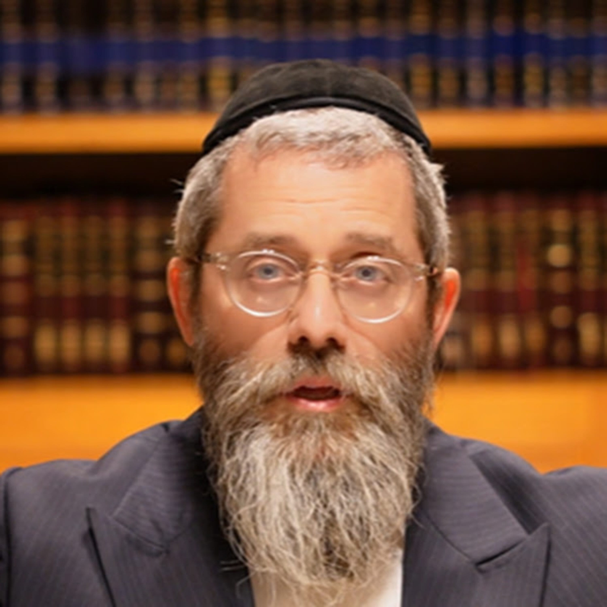

חסידות • לתורה ומצוות עם משמעות
הרב אשר פרקש
משמעות, פנימיות ועומק בחיי התורה והמצוות לפי רעיונות החסידות. עם המשפיע הרב אשר פרקש

הרב אשר פרקש
משמעות, פנימיות ועומק בחיי התורה והמצוות לפי רעיונות החסידות. עם המשפיע הרב אשר פרקש